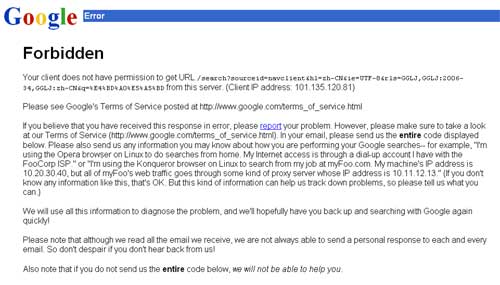

百度和Google的编程接口比较
百度和Google做为知名的搜索引擎，有非常丰富的搜索资源信息，很多人都希望编写程序调用搜索引擎的宝贵数据，昨天我写的那个程序是调用百度的搜索接口，为什么使用百度的呢，这中间其实也是有原因的。
我最开始打算调用Google的接口，Google本身也提供了Google SOAP Search API供程序员调用，一天可以进行一千次搜索调用，由于API是通过Web Service提供的，因此最佳调用是通过Java调用，然而不知何故我调试时候，搜索英文没问题，搜索中文就老报数组溢出错误。
由于我的调用程序需要访问Access数据库，因此我还是打算使用VB来编写，通过VB直接访问Google的搜索页面，于是我就很快写了一个通过VB直接调用Google查询的程序，一运行，发现竟然失败了，这令我很惊讶，因为我去年六月曾经也写过类似的调用程序，少量的直接调用Google搜索，当时是可以成功的。而现在调用失败，说明此功能已经被完全禁止。出现的错误界面如下所示。

http://download.williamlong.info/upload/714_1.jpg
其中的信息提到一个地址，就是“适用于个人的Google服务条款”，其中有一条：“不得执行自动查询 ：未经 Google 事先明确许可，不得将任何形式的自动查询发到 Google 系统。请注意，‘自动查询’包括通过使用软件向 Google 发送查询来确定搜索不同内容时网站的 Google 排名。”
这一条也就禁止用户编写程序直接调用Google，而必须通过类似Google SOAP Search API这样的接口来调用，每天查询次数被限制为1000次以下。
然而我通过同样的原理调用百度搜索引擎的时候，却发现调用完全正常，百度可以返回正确的搜索结果，虽然有时候搜索结果里会带有竞价广告。我尝试增加调用频率，在短时间内进行五千次以上的程序搜索，发现程序依旧工作正常，百度依旧会返回查询结果。
搜索引擎开放程序直接调用，的确方便了很多程序员，这样，即使百度不提供类似Google的API，我们也可以编程访问其搜索资源。
当然，我也猜测，百度这样做也不一定真的是为了造福大众，因为百度以前曾经推广过一些搜索插件程序， 类似紫光拼音输入法也会绑定百度的插件，因此会存在大量通过客户端程序而不是浏览器对于百度的访问，而百度对这方面很难进行判断识别，因此就开放了应用程 序的直接调用搜索。而Google没有推广过类似的客户端插件，因此为了节省服务器资源，索性就完全关闭了客户端的直接调用。
客户端的这种调用，对百度来说也是有一定压力的，如果大家滥用这些资源，那么百度也有可能会学Google一样关闭客户端的直接调用，因此不可滥用资源，例如我昨天提供的程序就限制了每次最多只能进行500次查询，以免对搜索服务器造成过大负载。
================================================
Google Search API包括Google Ajax Search API、Google Search Appliance APIs、Google SOAP Search API，前面几篇blog已经对它们进行了介绍。
撇开Google Search Appliance APIs这种企业级应用的方式，Google的Search API体系主要依靠Web Services和Ajax两种方式提供。严格地说，Google作为科技公司，同时也是最为成功的互联网公司，它针对Web应用而提供的API却还没有得到足够的应用，这不能不说是一种悲哀。
SOAP方式的API方便了Web和Application的两类开发者，而Ajax方式使得API调用更加容易，这应该是更符合未来Web技术发展特征的。
我对Ajax的理解并不局限于一定要使用XMLHttpRequest，On-Demand方式在我看来也是非常重要的Ajax调用形式。而Google所提供的Ajax Search API也非常有效地应用了On-Demand方式。